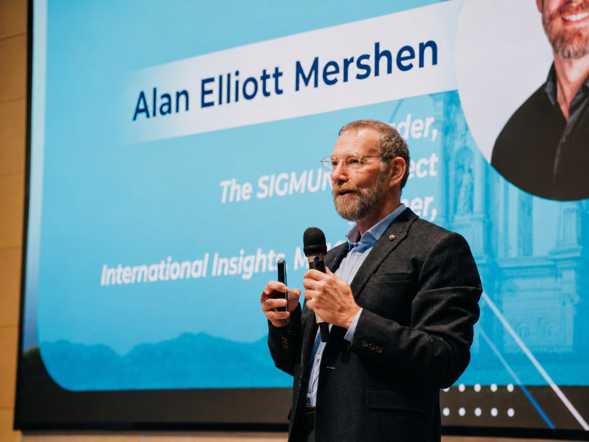

Alan Elliott on stage
Energy with a purpose.
“I want to use my energy in every presentation so that everyone in the audience leaves challenged and committed.”
Presenting throughout five continents, Alan Elliott draws on research, predictions and practical industry experience to help audiences think about what is coming next.
Discuss Your Event